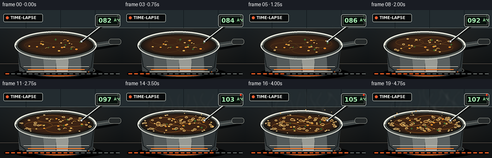
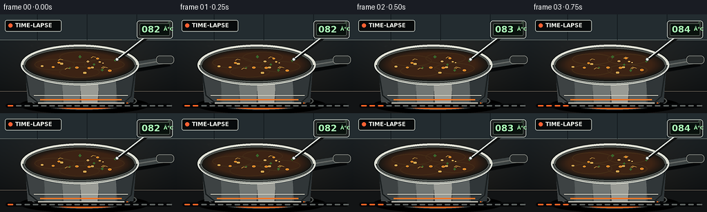
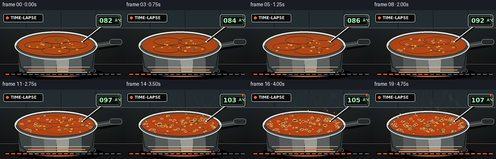
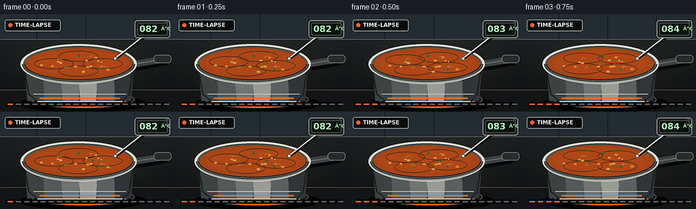

CODING AGENTS AS PIXEL WORLD MODELS
traex/GPT-5.6-Sol · phygen_108
点击播放 · 原生 RGB 像素
逐轮保存的候选
回放视频、检查图与代码变化。
每份候选均可单独播放。实际图片检查记录在下方工具轨迹中。
候选 01播放与检查图
点击播放 · 原生 RGB 像素


展开代码变化
--- 上一保存版本
+++ 本次保存版本
@@ -0,0 +1,198 @@
+from pathlib import Path
+import math
+import numpy as np
+from PIL import Image, ImageDraw, ImageFont, ImageFilter
+import artifact_io
+
+W,H,N,S = 256,144,20,4
+SS=3
+OUT=Path(__file__).resolve().parent
+FONT='/usr/share/fonts/truetype/dejavu/DejaVuSans.ttf'
+FONT_B='/usr/share/fonts/truetype/dejavu/DejaVuSans-Bold.ttf'
+
+def font(size,bold=False):
+ return ImageFont.truetype(FONT_B if bold else FONT, size*SS)
+def scbox(b): return tuple(int(round(v*SS)) for v in b)
+def pts(ps): return [(int(x*SS),int(y*SS)) for x,y in ps]
+def ellipse(d,b,fill,outline=None,width=1): d.ellipse(scbox(b),fill=fill,outline=outline,width=width*SS)
+def rect(d,b,fill,outline=None,width=1,r=0):
+ b=scbox(b)
+ if r: d.rounded_rectangle(b,radius=r*SS,fill=fill,outline=outline,width=width*SS)
+ else: d.rectangle(b,fill=fill,outline=outline,width=width*SS)
+def line(d,p,fill,width=1,joint='curve'): d.line(pts(p),fill=fill,width=width*SS,joint=joint)
+def text(d,xy,s,fill,f,anchor=None): d.text((xy[0]*SS,xy[1]*SS),s,fill=fill,font=f,anchor=anchor)
+
+def smoothstep(x): return x*x*(3-2*x)
+def clip_layer(layer, mask):
+ blank=Image.new('RGBA',layer.size,(0,0,0,0)); blank.paste(layer,(0,0),Image.composite(layer.getchannel('A'),Image.new('L',layer.size),mask)); return blank
+
+def make_frame(i):
+ t=i/(N-1); heat=smoothstep(t)
+ # Rich kitchen gradient with warm stove illumination.
+ yy,xx=np.mgrid[0:H*SS,0:W*SS]
+ top=np.array([27,35,40.],float); bot=np.array([7,10,12.],float)
+ q=yy/(H*SS-1)
+ arr=top[None,None,:]*(1-q[...,None])+bot[None,None,:]*q[...,None]
+ glow=np.exp(-((xx-124*SS)**2/(115*SS)**2+(yy-78*SS)**2/(78*SS)**2))[...,None]
+ arr += glow*np.array([18,12,6])[None,None,:]
+ # subtle cabinet/background gradients
+ arr=np.clip(arr,0,255).astype(np.uint8)
+ im=Image.fromarray(arr,'RGB').convert('RGBA'); d=ImageDraw.Draw(im)
+ # backsplash and counter line
+ rect(d,(0,0,256,37),(35,44,48,255));
+ line(d,[(0,37),(256,37)],(91,101,99,100),1)
+ for x in (54,126,198): line(d,[(x,0),(x,37)],(18,25,29,80),1)
+ rect(d,(0,112,256,144),(18,20,21,255)); line(d,[(0,112),(256,112)],(83,78,70,255),1)
+ # blurred red heat beneath the saucepan
+ heatlay=Image.new('RGBA',im.size,(0,0,0,0)); hd=ImageDraw.Draw(heatlay)
+ ellipse(hd,(42,113,196,142),(245,78,16,int(35+85*heat)))
+ heatlay=heatlay.filter(ImageFilter.GaussianBlur(9*SS)); im=Image.alpha_composite(im,heatlay); d=ImageDraw.Draw(im)
+ # cast shadow and stovetop ring
+ ellipse(d,(28,119,216,145),(0,0,0,140)); ellipse(d,(45,113,198,139),(8,9,10,255),(72,76,74,255),2)
+ ellipse(d,(57,117,188,137),(19,21,21,255),(122,110,94,180),1)
+ # orange element visible along bottom edge
+ arcbox=scbox((60,119,185,138)); d.arc(arcbox,7*SS,173*SS,fill=(255,102,26,210),width=2*SS)
+ # Handle, behind the pot
+ line(d,[(181,79),(245,68)],(5,7,8,255),15)
+ line(d,[(181,76),(243,66)],(60,66,66,255),10)
+ line(d,[(187,75),(242,66)],(100,104,101,255),2)
+ rect(d,(226,60,252,72),(39,43,43,255),(123,126,120,255),1,5)
+ # saucepan body, stainless steel with layered highlights
+ # body silhouette
+ d.polygon(pts([(34,69),(197,69),(190,119),(178,130),(57,130),(42,119)]),fill=(76,80,80,255))
+ # vertical brushed gradients clipped by increasingly smaller shapes
+ for k,col in enumerate([(61,66,67,255),(84,90,90,255),(112,117,115,255),(153,155,149,255),(91,97,97,255),(48,54,56,255)]):
+ x0=36+k*26; x1=x0+31
+ d.polygon(pts([(x0,72),(x1,72),(x1-4,128),(x0+4,128)]),fill=col)
+ # restore body silhouette edge and lower base
+ line(d,[(34,70),(42,118),(57,130),(178,130),(190,119),(197,70)],(26,31,32,255),2)
+ line(d,[(55,129),(180,129)],(195,193,181,210),2)
+ line(d,[(49,118),(185,118)],(211,208,194,70),1)
+ # hot reflection on pan
+ line(d,[(58,124),(176,124)],(255,118,40,int(40+90*heat)),2)
+ # top rim shadow and metallic outer ellipse
+ ellipse(d,(30,44,201,103),(32,35,34,255),(210,213,203,255),3)
+ ellipse(d,(34,48,197,99),(18,20,19,255),(84,89,85,255),2)
+ # soup surface, masked ellipse
+ surf_mask=Image.new('L',im.size,0); md=ImageDraw.Draw(surf_mask); md.ellipse(scbox((37,50,194,96)),fill=255)
+ soup=Image.new('RGBA',im.size,(0,0,0,0)); sd=ImageDraw.Draw(soup)
+ ellipse(sd,(37,50,194,96),(164+int(18*heat),66-int(7*heat),20,255))
+ # surface concentric shading
+ for k in range(12):
+ inset=k*1.6
+ a=int(12+4*k)
+ ellipse(sd,(37+inset,50+inset*.33,194-inset,96-inset*.33),(196+min(k,7)*2,79+k,23,a))
+ # convection swirls become increasingly visible
+ for j in range(4):
+ phase=2*math.pi*(t*0.8+j/4)
+ cx=115+36*math.cos(phase); cy=73+11*math.sin(phase)
+ box=(cx-29,cy-8,cx+29,cy+8)
+ sd.arc(scbox(box),int((30+j*77)*SS),int((160+j*77)*SS),fill=(245,137,42,int(55+75*heat)),width=SS)
+ # ingredients follow circulating trajectories
+ rng=np.random.default_rng(108)
+ for j in range(22):
+ ph=rng.uniform(0,2*math.pi)+t*(0.45+1.0*heat)*(1 if j%2 else -1)
+ rad=rng.uniform(.18,.88)
+ cx=115+rad*68*math.cos(ph); cy=73+rad*18*math.sin(ph)
+ typ=j%4
+ if typ==0: # carrot
+ r=2.0+rng.random()*1.3; ellipse(sd,(cx-r,cy-r*.55,cx+r,cy+r*.55),(238,113,24,230),(255,168,54,220),1)
+ elif typ==1: # green herb
+ r=1.5+rng.random(); sd.polygon(pts([(cx-r,cy),(cx,cy-r),(cx+r,cy),(cx,cy+r)]),fill=(63,111,46,225))
+ elif typ==2: # potato/noodle chunk
+ r=1.5+rng.random(); rect(sd,(cx-r,cy-r*.55,cx+r,cy+r*.55),(239,187,90,215),r=1)
+ else:
+ line(sd,[(cx-3,cy+1),(cx,cy-1),(cx+4,cy)],(242,178,76,180),1)
+ # bubbles: persistent trajectories with birth times; strong accelerating density
+ maxb=int(2+49*(heat**1.55))
+ brng=np.random.default_rng(812)
+ for j in range(maxb):
+ bx=brng.uniform(44,187); center_factor=max(0,1-((bx-115)/77)**2)
+ by=73+brng.uniform(-17,17)*math.sqrt(center_factor)
+ wob=math.sin(t*9+j*2.7)
+ r=brng.uniform(1.0,3.6)*(0.7+0.45*heat)
+ bx+=wob*1.3; by+=math.cos(t*8+j)*.6
+ # rings and blown highlights
+ ellipse(sd,(bx-r,by-r*.55,bx+r,by+r*.55),(203,104,31,90),(255,202,112,225),1)
+ if r>2.1: ellipse(sd,(bx-r*.45,by-r*.27,bx+r*.25,by+r*.08),(255,223,151,115))
+ # edge foam only near/after boiling
+ if heat>.48:
+ frng=np.random.default_rng(90)
+ for j in range(int(36*(heat-.45))):
+ ang=frng.uniform(0,2*math.pi); x=115+74*math.cos(ang); y=73+20*math.sin(ang)
+ r=frng.uniform(.8,2.1)
+ ellipse(sd,(x-r,y-r*.55,x+r,y+r*.55),(238,172,83,120),(255,218,152,190),1)
+ # rising central domes at hard boil
+ if heat>.72:
+ for j in range(5):
+ x=73+j*22+5*math.sin(i*.9+j); y=69+5*math.sin(i*1.4+j)
+ r=3+2*math.sin(i*.8+j)**2
+ ellipse(sd,(x-r,y-r*.48,x+r,y+r*.48),(223,121,39,100),(255,199,105,220),1)
+ # clip to soup surface
+ soup.putalpha(Image.composite(soup.getchannel('A'),Image.new('L',im.size,0),surf_mask))
+ im=Image.alpha_composite(im,soup); d=ImageDraw.Draw(im)
+ # crisp inner/outer rim in foreground, specular lip
+ d.arc(scbox((31,44,200,103)),0,180,fill=(111,117,113,255),width=2*SS)
+ d.arc(scbox((31,44,200,103)),0,180,fill=(234,235,222,255),width=SS)
+ d.arc(scbox((31,44,200,103)),180,360,fill=(218,219,208,255),width=3*SS)
+ d.arc(scbox((36,49,195,98)),180,360,fill=(74,77,72,255),width=SS)
+ # splash droplets above surface at late stage
+ if heat>.63:
+ spl=Image.new('RGBA',im.size,(0,0,0,0)); sp=ImageDraw.Draw(spl)
+ srng=np.random.default_rng(200+i//2)
+ for j in range(int(13*(heat-.55))):
+ x=srng.uniform(52,184); rise=srng.uniform(2,15)*heat
+ y=59-rise+3*math.sin(i+j)
+ r=srng.uniform(.5,1.3)
+ ellipse(sp,(x-r,y-r,x+r,y+r),(239,144,54,220),(255,205,117,200),1)
+ im=Image.alpha_composite(im,spl)
+ # steam tendrils behind overlay/UI, escalating substantially
+ steam=Image.new('RGBA',im.size,(0,0,0,0)); st=ImageDraw.Draw(steam)
+ count=int(1+10*heat)
+ for j in range(count):
+ # stable columns with flowing phase
+ base=51+j*(132/max(1,count-1))
+ phase=j*1.73+i*.47
+ height=12+36*heat+7*math.sin(j*2.1)**2
+ path=[]
+ for u in np.linspace(0,1,30):
+ x=base+5*math.sin(u*math.pi*2.0+phase)+2.2*math.sin(u*8+phase*.7)
+ y=55-u*height-2*math.sin(phase+u*3)
+ path.append((x,y))
+ alpha=int(18+55*heat)
+ line(st,path,(236,242,235,alpha),max(1,int(1+heat*1.6)))
+ steam=steam.filter(ImageFilter.GaussianBlur((1.2+1.4*heat)*SS))
+ im=Image.alpha_composite(im,steam); d=ImageDraw.Draw(im)
+ # Thermometer probe entering the pot
+ line(d,[(218,30),(171,65)],(16,18,18,180),4)
+ line(d,[(216,28),(169,65)],(208,214,207,255),2)
+ ellipse(d,(166.5,62.5,172,68),(230,236,226,255),(70,74,72,255),1)
+ # Digital thermometer body/readout
+ rect(d,(198,9,250,35),(31,34,34,245),(176,183,177,255),1,4)
+ rect(d,(202,13,246,31),(9,18,14,255),(76,87,78,255),1,2)
+ temp=82 + 25*heat
+ text(d,(205,14),f'{temp:03.0f}',(160,250,172,255),font(13,True))
+ text(d,(237,17),'°C',(160,250,172,255),font(7,True))
+ # Crossing-100 warning LED
+ ellipse(d,(243,10,247,14),(255,63,35,255) if temp>=100 else (55,71,58,255))
+ # understated timelapse badge
+ rect(d,(7,8,89,25),(8,11,12,190),(169,176,170,120),1,3)
+ ellipse(d,(12,13,18,19),(255,94,49,255))
+ text(d,(22,11),'TIME-LAPSE',(235,238,231,255),font(8,True))
+ # progress ticks communicate rapid thermal transition
+ rect(d,(8,130,248,136),(6,7,8,170),r=3)
+ for k in range(20):
+ x=11+k*12.1
+ col=(249,93,35,240) if k<=i else (86,91,89,170)
+ rect(d,(x,132,x+8,134),col,r=1)
+ # final slight sharpening after downsample
+ im=im.convert('RGB').resize((W,H),Image.Resampling.LANCZOS)
+ im=im.filter(ImageFilter.UnsharpMask(radius=.6,percent=75,threshold=3))
+ return np.asarray(im,dtype=np.uint8)
+
+def main():
+ frames=np.stack([make_frame(i) for i in range(N)])
+ artifact_io.save(frames,OUT)
+ print('saved',frames.shape,frames.dtype)
+
+if __name__=='__main__': main()
候选 02播放与检查图
点击播放 · 原生 RGB 像素


展开代码变化
--- 上一保存版本
+++ 本次保存版本
@@ -77,11 +77,15 @@
surf_mask=Image.new('L',im.size,0); md=ImageDraw.Draw(surf_mask); md.ellipse(scbox((37,50,194,96)),fill=255)
soup=Image.new('RGBA',im.size,(0,0,0,0)); sd=ImageDraw.Draw(soup)
ellipse(sd,(37,50,194,96),(164+int(18*heat),66-int(7*heat),20,255))
- # surface concentric shading
+ # Translucent shading stays on a separate layer, preserving the opaque
+ # soup base beneath its highlights.
+ shade=Image.new('RGBA',im.size,(0,0,0,0)); shd=ImageDraw.Draw(shade)
for k in range(12):
inset=k*1.6
a=int(12+4*k)
- ellipse(sd,(37+inset,50+inset*.33,194-inset,96-inset*.33),(196+min(k,7)*2,79+k,23,a))
+ ellipse(shd,(37+inset,50+inset*.33,194-inset,96-inset*.33),(196+min(k,7)*2,79+k,23,a))
+ soup=Image.alpha_composite(soup,shade)
+ sd=ImageDraw.Draw(soup)
# convection swirls become increasingly visible
for j in range(4):
phase=2*math.pi*(t*0.8+j/4)
可观测工具轨迹
实际执行的命令与返回图片。
命令 1exit 0
/bin/bash -lc "cat prompt.txt && printf '\\n---RULES---\\n' && cat GENERATION_RULES.md && printf '\\n---SPEC---\\n' && cat task_spec.json"
命令 2exit 0
/bin/bash -lc "find . -maxdepth 2 -type f -printf '%p\\n' | sort && printf '\\nTOOLS\\n' && command -v ffmpeg || true && command -v blender || true && python3 - <<'PY'
try:
import cv2; print('cv2', cv2.__version__)
except Exception as e: print('no cv2',e)
try:
from PIL import Image; print('PIL ok')
except Exception as e: print('no PIL',e)
PY"命令 3exit 0
/bin/bash -lc 'cat artifact_io.py'
命令 4exit 0
/bin/bash -lc 'fc-list 2>/dev/null | head -10 || true'
命令 5exit 0
/bin/bash -lc "cat > generate.py <<'PY'
from pathlib import Path
import math
import numpy as np
from PIL import Image, ImageDraw, ImageFont, ImageFilter
import artifact_io
W,H,N,S = 256,144,20,4
SS=3
OUT=Path(__file__).resolve().parent
FONT='/usr/share/fonts/truetype/dejavu/DejaVuSans.ttf'
FONT_B='/usr/share/fonts/truetype/dejavu/DejaVuSans-Bold.ttf'
def font(size,bold=False):
return ImageFont.truetype(FONT_B if bold else FONT, size*SS)
def scbox(b): return tuple(int(round(v*SS)) for v in b)
def pts(ps): return [(int(x*SS),int(y*SS)) for x,y in ps]
def ellipse(d,b,fill,outline=None,width=1): d.ellipse(scbox(b),fill=fill,outline=outline,width=width*SS)
def rect(d,b,fill,outline=None,width=1,r=0):
b=scbox(b)
if r: d.rounded_rectangle(b,radius=r*SS,fill=fill,outline=outline,width=width*SS)
else: d.rectangle(b,fill=fill,outline=outline,width=width*SS)
def line(d,p,fill,width=1,joint='curve'): d.line(pts(p),fill=fill,width=width*SS,joint=joint)
def text(d,xy,s,fill,f,anchor=None): d.text((xy[0]*SS,xy[1]*SS),s,fill=fill,font=f,anchor=anchor)
def smoothstep(x): return x*x*(3-2*x)
def clip_layer(layer, mask):
blank=Image.new('RGBA',layer.size,(0,0,0,0)); blank.paste(layer,(0,0),Image.composite(layer.getchannel('A'),Image.new('L',layer.size),mask)); return blank
def make_frame(i):
t=i/(N-1); heat=smoothstep(t)
# Rich kitchen gradient with warm stove illumination.
yy,xx=np.mgrid[0:H*SS,0:W*SS]
top=np.array([27,35,40.],float); bot=np.array([7,10,12.],float)
q=yy/(H*SS-1)
arr=top[None,None,:]*(1-q[...,None])+bot[None,None,:]*q[...,None]
glow=np.exp(-((xx-124*SS)**2/(115*SS)**2+(yy-78*SS)**2/(78*SS)**2))[...,None]
arr += glow*np.array([18,12,6])[None,None,:]
# subtle cabinet/background gradients
arr=np.clip(arr,0,255).astype(np.uint8)
im=Image.fromarray(arr,'RGB').convert('RGBA'); d=ImageDraw.Draw(im)
# backsplash and counter line
rect(d,(0,0,256,37),(35,44,48,255));
line(d,[(0,37),(256,37)],(91,101,99,100),1)
for x in (54,126,198): line(d,[(x,0),(x,37)],(18,25,29,80),1)
rect(d,(0,112,256,144),(18,20,21,255)); line(d,[(0,112),(256,112)],(83,78,70,255),1)
# blurred red heat beneath the saucepan
heatlay=Image.new('RGBA',im.size,(0,0,0,0)); hd=ImageDraw.Draw(heatlay)
ellipse(hd,(42,113,196,142),(245,78,16,int(35+85*heat)))
heatlay=heatlay.filter(ImageFilter.GaussianBlur(9*SS)); im=Image.alpha_composite(im,heatlay); d=ImageDraw.Draw(im)
# cast shadow and stovetop ring
ellipse(d,(28,119,216,145),(0,0,0,140)); ellipse(d,(45,113,198,139),(8,9,10,255),(72,76,74,255),2)
ellipse(d,(57,117,188,137),(19,21,21,255),(122,110,94,180),1)
# orange element visible along bottom edge
arcbox=scbox((60,119,185,138)); d.arc(arcbox,7*SS,173*SS,fill=(255,102,26,210),width=2*SS)
# Handle, behind the pot
line(d,[(181,79),(245,68)],(5,7,8,255),15)
line(d,[(181,76),(243,66)],(60,66,66,255),10)
line(d,[(187,75),(242,66)],(100,104,101,255),2)
rect(d,(226,60,252,72),(39,43,43,255),(123,126,120,255),1,5)
# saucepan body, stainless steel with layered highlights
# body silhouette
d.polygon(pts([(34,69),(197,69),(190,119),(178,130),(57,130),(42,119)]),fill=(76,80,80,255))
# vertical brushed gradients clipped by increasingly smaller shapes
for k,col in enumerate([(61,66,67,255),(84,90,90,255),(112,117,115,255),(153,155,149,255),(91,97,97,255),(48,54,56,255)]):
x0=36+k*26; x1=x0+31
d.polygon(pts([(x0,72),(x1,72),(x1-4,128),(x0+4,128)]),fill=col)
# restore body silhouette edge and lower base
line(d,[(34,70),(42,118),(57,130),(178,130),(190,119),(197,70)],(26,31,32,255),2)
line(d,[(55,129),(180,129)],(195,193,181,210),2)
line(d,[(49,118),(185,118)],(211,208,194,70),1)
# hot reflection on pan
line(d,[(58,124),(176,124)],(255,118,40,int(40+90*heat)),2)
# top rim shadow and metallic outer ellipse
ellipse(d,(30,44,201,103),(32,35,34,255),(210,213,203,255),3)
ellipse(d,(34,48,197,99),(18,20,19,255),(84,89,85,255),2)
# soup surface, masked ellipse
surf_mask=Image.new('L',im.size,0); md=ImageDraw.Draw(surf_mask); md.ellipse(scbox((37,50,194,96)),fill=255)
soup=Image.new('RGBA',im.size,(0,0,0,0)); sd=ImageDraw.Draw(soup)
ellipse(sd,(37,50,194,96),(164+int(18*heat),66-int(7*heat),20,255))
# surface concentric shading
for k in range(12):
inset=k*1.6
a=int(12+4*k)
ellipse(sd,(37+inset,50+inset*.33,194-inset,96-inset*.33),(196+min(k,7)*2,79+k,23,a))
# convection swirls become increasingly visible
for j in range(4):
phase=2*math.pi*(t*0.8+j/4)
cx=115+36*math.cos(phase); cy=73+11*math.sin(phase)
box=(cx-29,cy-8,cx+29,cy+8)
sd.arc(scbox(box),int((30+j*77)*SS),int((160+j*77)*SS),fill=(245,137,42,int(55+75*heat)),width=SS)
# ingredients follow circulating trajectories
rng=np.random.default_rng(108)
for j in range(22):
ph=rng.uniform(0,2*math.pi)+t*(0.45+1.0*heat)*(1 if j%2 else -1)
rad=rng.uniform(.18,.88)
cx=115+rad*68*math.cos(ph); cy=73+rad*18*math.sin(ph)
typ=j%4
if typ==0: # carrot
r=2.0+rng.random()*1.3; ellipse(sd,(cx-r,cy-r*.55,cx+r,cy+r*.55),(238,113,24,230),(255,168,54,220),1)
elif typ==1: # green herb
r=1.5+rng.random(); sd.polygon(pts([(cx-r,cy),(cx,cy-r),(cx+r,cy),(cx,cy+r)]),fill=(63,111,46,225))
elif typ==2: # potato/noodle chunk
r=1.5+rng.random(); rect(sd,(cx-r,cy-r*.55,cx+r,cy+r*.55),(239,187,90,215),r=1)
else:
line(sd,[(cx-3,cy+1),(cx,cy-1),(cx+4,cy)],(242,178,76,180),1)
# bubbles: persistent trajectories with birth times; strong accelerating density
maxb=int(2+49*(heat**1.55))
brng=np.random.default_rng(812)
for j in range(maxb):
bx=brng.uniform(44,187); center_factor=max(0,1-((bx-115)/77)**2)
by=73+brng.uniform(-17,17)*math.sqrt(center_factor)
wob=math.sin(t*9+j*2.7)
r=brng.uniform(1.0,3.6)*(0.7+0.45*heat)
bx+=wob*1.3; by+=math.cos(t*8+j)*.6
# rings and blown highlights
ellipse(sd,(bx-r,by-r*.55,bx+r,by+r*.55),(203,104,31,90),(255,202,112,225),1)
if r>2.1: ellipse(sd,(bx-r*.45,by-r*.27,bx+r*.25,by+r*.08),(255,223,151,115))
# edge foam only near/after boiling
if heat>.48:
frng=np.random.default_rng(90)
for j in range(int(36*(heat-.45))):
ang=frng.uniform(0,2*math.pi); x=115+74*math.cos(ang); y=73+20*math.sin(ang)
r=frng.uniform(.8,2.1)
ellipse(sd,(x-r,y-r*.55,x+r,y+r*.55),(238,172,83,120),(255,218,152,190),1)
# rising central domes at hard boil
if heat>.72:
for j in range(5):
x=73+j*22+5*math.sin(i*.9+j); y=69+5*math.sin(i*1.4+j)
r=3+2*math.sin(i*.8+j)**2
ellipse(sd,(x-r,y-r*.48,x+r,y+r*.48),(223,121,39,100),(255,199,105,220),1)
# clip to soup surface
soup.putalpha(Image.composite(soup.getchannel('A'),Image.new('L',im.size,0),surf_mask))
im=Image.alpha_composite(im,soup); d=ImageDraw.Draw(im)
# crisp inner/outer rim in foreground, specular lip
d.arc(scbox((31,44,200,103)),0,180,fill=(111,117,113,255),width=2*SS)
d.arc(scbox((31,44,200,103)),0,180,fill=(234,235,222,255),width=SS)
d.arc(scbox((31,44,200,103)),180,360,fill=(218,219,208,255),width=3*SS)
d.arc(scbox((36,49,195,98)),180,360,fill=(74,77,72,255),width=SS)
# splash droplets above surface at late stage
if heat>.63:
spl=Image.new('RGBA',im.size,(0,0,0,0)); sp=ImageDraw.Draw(spl)
srng=np.random.default_rng(200+i//2)
for j in range(int(13*(heat-.55))):
x=srng.uniform(52,184); rise=srng.uniform(2,15)*heat
y=59-rise+3*math.sin(i+j)
r=srng.uniform(.5,1.3)
ellipse(sp,(x-r,y-r,x+r,y+r),(239,144,54,220),(255,205,117,200),1)
im=Image.alpha_composite(im,spl)
# steam tendrils behind overlay/UI, escalating substantially
steam=Image.new('RGBA',im.size,(0,0,0,0)); st=ImageDraw.Draw(steam)
count=int(1+10*heat)
for j in range(count):
# stable columns with flowing phase
base=51+j*(132/max(1,count-1))
phase=j*1.73+i*.47
height=12+36*heat+7*math.sin(j*2.1)**2
path=[]
for u in np.linspace(0,1,30):
x=base+5*math.sin(u*math.pi*2.0+phase)+2.2*math.sin(u*8+phase*.7)
y=55-u*height-2*math.sin(phase+u*3)
path.append((x,y))
alpha=int(18+55*heat)
line(st,path,(236,242,235,alpha),max(1,int(1+heat*1.6)))
steam=steam.filter(ImageFilter.GaussianBlur((1.2+1.4*heat)*SS))
im=Image.alpha_composite(im,steam); d=ImageDraw.Draw(im)
# Thermometer probe entering the pot
line(d,[(218,30),(171,65)],(16,18,18,180),4)
line(d,[(216,28),(169,65)],(208,214,207,255),2)
ellipse(d,(166.5,62.5,172,68),(230,236,226,255),(70,74,72,255),1)
# Digital thermometer body/readout
rect(d,(198,9,250,35),(31,34,34,245),(176,183,177,255),1,4)
rect(d,(202,13,246,31),(9,18,14,255),(76,87,78,255),1,2)
temp=82 + 25*heat
text(d,(205,14),f'{temp:03.0f}',(160,250,172,255),font(13,True))
text(d,(237,17),'°C',(160,250,172,255),font(7,True))
# Crossing-100 warning LED
ellipse(d,(243,10,247,14),(255,63,35,255) if temp>=100 else (55,71,58,255))
# understated timelapse badge
rect(d,(7,8,89,25),(8,11,12,190),(169,176,170,120),1,3)
ellipse(d,(12,13,18,19),(255,94,49,255))
text(d,(22,11),'TIME-LAPSE',(235,238,231,255),font(8,True))
# progress ticks communicate rapid thermal transition
rect(d,(8,130,248,136),(6,7,8,170),r=3)
for k in range(20):
x=11+k*12.1
col=(249,93,35,240) if k<=i else (86,91,89,170)
rect(d,(x,132,x+8,134),col,r=1)
# final slight sharpening after downsample
im=im.convert('RGB').resize((W,H),Image.Resampling.LANCZOS)
im=im.filter(ImageFilter.UnsharpMask(radius=.6,percent=75,threshold=3))
return np.asarray(im,dtype=np.uint8)
def main():
frames=np.stack([make_frame(i) for i in range(N)])
artifact_io.save(frames,OUT)
print('saved',frames.shape,frames.dtype)
if __name__=='__main__': main()
PY
python3 generate.py"命令 6exit 0
/bin/bash -lc "python3 - <<'PY'
from PIL import Image
im=Image.open('inspection.png'); print(im.size, im.mode)
PY
ls -lh pixels.npz index.html inspection.png transition_check.png frames/00.png frames/19.png"命令 7exit 0
/bin/bash -lc "python3 - <<'PY'
import numpy as np
from PIL import Image
fs=np.stack([np.asarray(Image.open(f'frames/{i:02d}.png')) for i in range(20)])
print('shape',fs.shape,'range',fs.min(),fs.max())
print('mean frame diffs',np.abs(np.diff(fs.astype(int),axis=0)).mean((1,2,3)).round(2).tolist())
print('unique',len(np.unique(fs.reshape(-1,3),axis=0)))
PY"命令 8exit 0
/bin/bash -lc "grep -n \"surface concentric\\|text(d,(237\" generate.py"
命令 9exit 0
/bin/bash -lc "python3 generate.py && python3 - <<'PY'
from pathlib import Path
import json, numpy as np
from PIL import Image
s=json.loads(Path('task_spec.json').read_text())
f=list(sorted(Path('frames').glob('*.png')))
a=np.stack([np.asarray(Image.open(x)) for x in f])
assert len(f)==s['frames'] and a.shape==(20,144,256,3) and a.dtype==np.uint8
assert all(Path(x).exists() for x in ['pixels.npz','index.html','inspection.png','transition_check.png'])
print('validation ok:', a.shape, 'motion MAD', float(np.abs(np.diff(a.astype(np.int16),axis=0)).mean()))
PY"保存候选 2 份；完成命令 9 次；可验证图片返回 0 张。原始 API 响应与完整日志保留在本地。